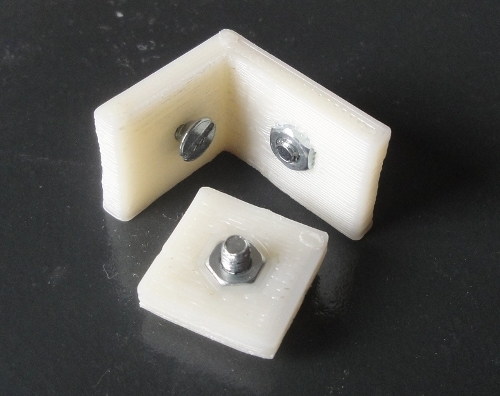

Las piezas con tuercas empotradas son muy útiles para facilitar los montajes.
Sólo hay que atornillar y listo. Para probar la viabilidad de construir estas piezas con
una impresora 3D Opensource he creado estos objetos:
Piezas con tuercas empotradas.


He probado con dos piezas: una plana y otra en forma de L. La diferencia está la orientación del hueco para la tuerca. En la pieza plana está horizontal y en la pieza en L en vertical.
Para insertar la tuerca hay que colocar un tornillo y apretar. Luego, se saca el tornillo y la tuerca queda perfectamente encajada. No se cae.